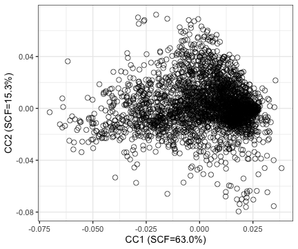

CATaN: Canonical correlation Analysis of Transcriptome and TF-gene regulatory Networks
Haruka Takahashi, Hiroaki Hatano, Kazuyoshi Ishigaki
Source:vignettes/CATaN_tutorial.Rmd
CATaN_tutorial.RmdIntroduction
CATaN (Canonical correlation Analysis of Transcriptome and TF-gene regulatory Networks) identifies shared regulatory axes between transcription factor (TF) binding patterns and transcriptome profiles. The resulting Canonical Component (CC) scores are mapped to genomic SNP positions, producing annotation files suitable for stratified LD Score Regression (S-LDSC).
Quick start
## Dependencies used in this tutorial
install.packages(c("BiocManager", "remotes"))
BiocManager::install(c("GEOquery", "data.table"))
## CATaN itself (note: the package lives in the CATaN/ subdirectory)
BiocManager::install("htakahashi1/CATaN", subdir = "CATaN")Step 1: Prepare input data
CATaN requires two matrices with shared gene identifiers as row names:
- TF-GRN matrix: a gene × TF matrix of TF-gene connectivity scores, derived from TF ChIP-seq data, quantifying the regulatory association between each TF and each gene.
- transcriptome count matrix: raw counts (gene × sample).
The TF-GRN matrix from the CATaN paper is available on Zenodo. For the transcriptome, any bulk RNA-seq raw count matrix can be used; as an example, here we use our original RNA-seq data deposited in GEO (GSE335951).
TF-GRN matrix (Zenodo)
download_tf_matrix() downloads the matrix from Zenodo
and caches it locally, so it is only downloaded once (the file is ~2.6
GB).
matrix_file <- download_tf_matrix(tempdir())
tf_raw <- fread(matrix_file)
## Columns 1-2 are gene index and gene ID; the rest are TF ChIP-seq samples.
tf_matrix <- as.matrix(tf_raw[, -c(1, 2)])
rownames(tf_matrix) <- tf_raw$gene_name # Ensembl IDs (with version suffix)
dim(tf_matrix)
#> [1] 59885 2868Step 2: Filter low-expression genes
filtered_counts <- filter_low_expression(counts)
#> Low expression filtering: 74628 -> 22608 genes (removed 52020)
#> Criteria: count >= 10 and CPM >= 1 in >= 15% samplesStep 3: Prepare matrices
Find common genes between the count data and TF-GRN matrix, and
perform TMM normalization. Version suffixes on the TF-GRN gene IDs
(e.g. .7_3) are stripped automatically so they match the
unversioned IDs in the count matrix.
mats <- prepare_matrices(filtered_counts, tf_matrix)
#> Stripped version suffix from 59885 TF gene IDs
#> Removing 82 duplicated genes from TF matrix
#> Prepared matrices: 19573 common genes, 2868 TFs, 36 samples
names(mats)
#> [1] "tf" "expr"
dim(mats$tf)
#> [1] 19573 2868
dim(mats$expr)
#> [1] 19573 36Step 4: Run CCA
cca_result <- run_cca(
tf_matrix = mats$tf,
transcriptome = mats$expr,
n_cc = 10L,
n_hvg = 10000L
)
#> Selecting highly variable genes...
#> 4341 HVGs selected
#> Performing bidirectional scaling...
#> After scaling: 2868 TFs x 4341 genes, 36 samples x 4341 genes
#> Computing SVD...
#> Computing CCA parameters...
#> Done.
cca_result
#> CATaNResult object
#> Genes (HVG): 4341
#> TFs: 2868
#> Samples: 36
#> Canonical components: 10
#> Parameters available: transcriptome_variance, tf_variance, sv_proportion, scf, canonical_correlationStep 5: Inspect results
CCA parameters
ccParameters(cca_result)
#> DataFrame with 5 rows and 10 columns
#> CC1 CC2 CC3 CC4 CC5 CC6
#> <numeric> <numeric> <numeric> <numeric> <numeric> <numeric>
#> transcriptome_variance 0.1379800 0.0406859 0.0725351 0.0321084 0.03171554 0.02519514
#> tf_variance 0.0680469 0.0375132 0.0491624 0.0655463 0.01825105 0.01104658
#> sv_proportion 0.2336837 0.1150307 0.0836061 0.0529325 0.02934605 0.02587254
#> scf 0.6296313 0.1525657 0.0805945 0.0323053 0.00992953 0.00771805
#> canonical_correlation 0.2632492 0.3631968 0.1356297 0.1260561 0.14489253 0.16796859
#> CC7 CC8 CC9 CC10
#> <numeric> <numeric> <numeric> <numeric>
#> transcriptome_variance 0.02676711 0.02610437 0.02542153 0.0236517
#> tf_variance 0.01272403 0.00792242 0.00537204 0.0058064
#> sv_proportion 0.02387257 0.02313505 0.02126052 0.0196133
#> scf 0.00657095 0.00617121 0.00521167 0.0044354
#> canonical_correlation 0.14896508 0.18753198 0.21632655 0.1952710tfsampleLoading
head(tfsampleLoading(cca_result))
#> DataFrame with 6 rows and 10 columns
#> CC1_rotation CC2_rotation CC3_rotation CC4_rotation CC5_rotation
#> <numeric> <numeric> <numeric> <numeric> <numeric>
#> GSM1410776_FOXA1 -0.00251181 0.04944372 0.004264177 -0.01573747 0.01633806
#> GSM1010879_SIX5 -0.03935609 -0.00396754 -0.009542592 -0.00325874 0.02441270
#> GSM714610_TFAP4 0.02390387 -0.00593351 0.000257522 -0.01479524 0.01310139
#> GSM701860_LMBL2 0.00827648 -0.00914537 -0.010343114 -0.02483078 0.00503274
#> GSM1534739_FOXA1 0.01070724 0.03817590 0.001163378 -0.00798135 0.01270919
#> GSM497491_RB -0.03014190 -0.00448268 -0.019269819 -0.01606909 0.02255399
#> CC6_rotation CC7_rotation CC8_rotation CC9_rotation CC10_rotation
#> <numeric> <numeric> <numeric> <numeric> <numeric>
#> GSM1410776_FOXA1 0.015865168 0.0183706 0.01347377 0.03737568 0.0161044
#> GSM1010879_SIX5 -0.017733780 -0.0147795 -0.00990483 -0.00301368 -0.0190232
#> GSM714610_TFAP4 0.018500800 -0.0174264 0.00548425 0.01264955 0.0034926
#> GSM701860_LMBL2 0.003443921 0.0201850 0.00373546 0.01680166 0.0145153
#> GSM1534739_FOXA1 -0.004875034 -0.0050882 0.02122613 0.03635466 -0.0163136
#> GSM497491_RB 0.000711007 -0.0169316 0.00306816 0.01801860 -0.0390859Visualisation
if (requireNamespace("ggplot2", quietly = TRUE)) {
plotCC(cca_result, cc_x = 1, cc_y = 2, space = "tf")
}
SNP annotation for S-LDSC
After CCA, CC scores are mapped to genomic SNP positions using TF ChIP-seq peak BED files. This section describes the workflow; the steps below are shown for reference and are not executed in this vignette.
Download reference data
## Download TF peak BED files from Zenodo (first time only)
peak_dir <- download_peak_beds("~/catan_data/peaks")Prepare SNP coordinates
Target SNPs should be provided as a GRanges object. The
1000 Genomes Phase 3 .bim files (the standard LDSC
reference panel) can be obtained from the LDSC
tutorial; they are not redistributed with CATaN. A convenience
function converts a .bim file to GRanges:
## Convert .bim file to GRanges
snp_gr <- bim_to_granges("path/to/1000G.EUR.QC.22.bim")
snp_gr
## Or combine all chromosomes
bim_files <- list.files("path/to/bim_dir", pattern = "\\.bim$",
full.names = TRUE)
snp_list <- lapply(bim_files, bim_to_granges)
snp_gr <- do.call(c, snp_list)Align CC scores to SNPs
library(BiocParallel)
annot <- align_cc_to_snps(
catan_result = cca_result,
peak_dir = peak_dir,
snp_gr = snp_gr,
chromosomes = paste0("chr", 1:22),
BPPARAM = MulticoreParam(4) # 4 cores
)make CC annotations and export
## Assign 1 to SNPs in the top or bottom 10% of the CC score distribution, and 0 to all others
annot <- extract_top_bottom_snps(annot, percentile = 0.1)
## Export as sLDSC-ready BED files
export_for_sldsc(annot, output_dir = "sldsc_annotations/", prefix = "CATaN")Output files:
sldsc_annotations/
├── CATaN_CC1_rotation_top.bed.gz
├── CATaN_CC1_rotation_bottom.bed.gz
├── CATaN_CC2_rotation_top.bed.gz
├── CATaN_CC2_rotation_bottom.bed.gz
└── ...These files can be used directly as annotations in
ldsc.py.
End-to-end wrapper
For convenience, run_catan() executes the entire
pipeline:
result <- run_catan(
counts = counts,
tf_matrix = tf_matrix,
peak_dir = peak_dir,
snp_gr = snp_gr,
n_cc = 10L,
n_hvg = 10000L,
percentile = 0.1,
output_dir = "sldsc_output/",
BPPARAM = MulticoreParam(4)
)Session information
sessionInfo()
#> R version 4.5.1 (2025-06-13)
#> Platform: aarch64-apple-darwin20
#> Running under: macOS Sequoia 15.7.3
#>
#> Matrix products: default
#> BLAS: /System/Library/Frameworks/Accelerate.framework/Versions/A/Frameworks/vecLib.framework/Versions/A/libBLAS.dylib
#> LAPACK: /Library/Frameworks/R.framework/Versions/4.5-arm64/Resources/lib/libRlapack.dylib; LAPACK version 3.12.1
#>
#> locale:
#> [1] en_US.UTF-8/en_US.UTF-8/en_US.UTF-8/C/en_US.UTF-8/en_US.UTF-8
#>
#> time zone: Asia/Tokyo
#> tzcode source: internal
#>
#> attached base packages:
#> [1] stats graphics grDevices utils datasets methods base
#>
#> other attached packages:
#> [1] knitr_1.51 GEOquery_2.78.0 Biobase_2.70.0 BiocGenerics_0.56.0
#> [5] generics_0.1.4 CATaN_0.1.0 data.table_1.18.4 testthat_3.3.2
#>
#> loaded via a namespace (and not attached):
#> [1] DBI_1.3.0 bitops_1.0-9 httr2_1.2.3
#> [4] rlang_1.3.0 magrittr_2.0.5 otel_0.2.0
#> [7] matrixStats_1.5.0 compiler_4.5.1 RSQLite_3.53.3
#> [10] vctrs_0.7.3 pkgconfig_2.0.3 crayon_1.5.3
#> [13] fastmap_1.2.0 dbplyr_2.6.0 XVector_0.50.0
#> [16] ellipsis_0.3.3 labeling_0.4.3 Rsamtools_2.26.0
#> [19] rmarkdown_2.31 sessioninfo_1.2.4 tzdb_0.5.0
#> [22] UCSC.utils_1.6.1 purrr_1.2.2 bit_4.6.0
#> [25] xfun_0.60 cachem_1.1.0 cigarillo_1.0.0
#> [28] GenomeInfoDb_1.46.2 jsonlite_2.0.0 blob_1.3.0
#> [31] DelayedArray_0.36.1 BiocParallel_1.44.0 parallel_4.5.1
#> [34] R6_2.6.1 RColorBrewer_1.1-3 limma_3.66.0
#> [37] rtracklayer_1.70.1 pkgload_1.5.3 brio_1.1.5
#> [40] GenomicRanges_1.62.1 Seqinfo_1.0.0 SummarizedExperiment_1.40.0
#> [43] usethis_3.2.1 R.utils_2.13.0 readr_2.2.0
#> [46] IRanges_2.44.0 rentrez_1.2.4 Matrix_1.7-5
#> [49] tidyselect_1.2.1 rstudioapi_0.19.0 abind_1.4-8
#> [52] yaml_2.3.12 codetools_0.2-20 curl_7.1.0
#> [55] pkgbuild_1.4.8 lattice_0.22-9 tibble_3.3.1
#> [58] S7_0.2.2 withr_3.0.3 evaluate_1.0.5
#> [61] desc_1.4.3 BiocFileCache_3.0.0 xml2_1.6.0
#> [64] Biostrings_2.78.0 pillar_1.11.1 BiocManager_1.30.27
#> [67] filelock_1.0.3 MatrixGenerics_1.22.0 stats4_4.5.1
#> [70] rprojroot_2.1.1 RCurl_1.98-1.19 S4Vectors_0.48.1
#> [73] hms_1.1.4 ggplot2_4.0.3 scales_1.4.0
#> [76] glue_1.8.1 tools_4.5.1 BiocIO_1.20.0
#> [79] locfit_1.5-9.12 GenomicAlignments_1.46.0 fs_2.1.0
#> [82] XML_3.99-0.23 grid_4.5.1 tidyr_1.3.2
#> [85] devtools_2.5.2 edgeR_4.8.2 restfulr_0.0.17
#> [88] cli_3.6.6 rappdirs_0.3.4 S4Arrays_1.10.1
#> [91] dplyr_1.2.1 gtable_0.3.6 R.methodsS3_1.8.2
#> [94] digest_0.6.39 SparseArray_1.10.10 farver_2.1.2
#> [97] rjson_0.2.23 memoise_2.0.1 htmltools_0.5.9
#> [100] R.oo_1.27.1 lifecycle_1.0.5 httr_1.4.8
#> [103] statmod_1.5.2 bit64_4.8.2